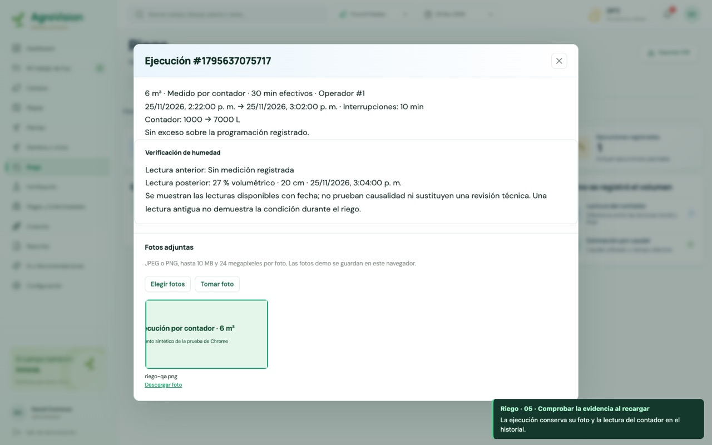
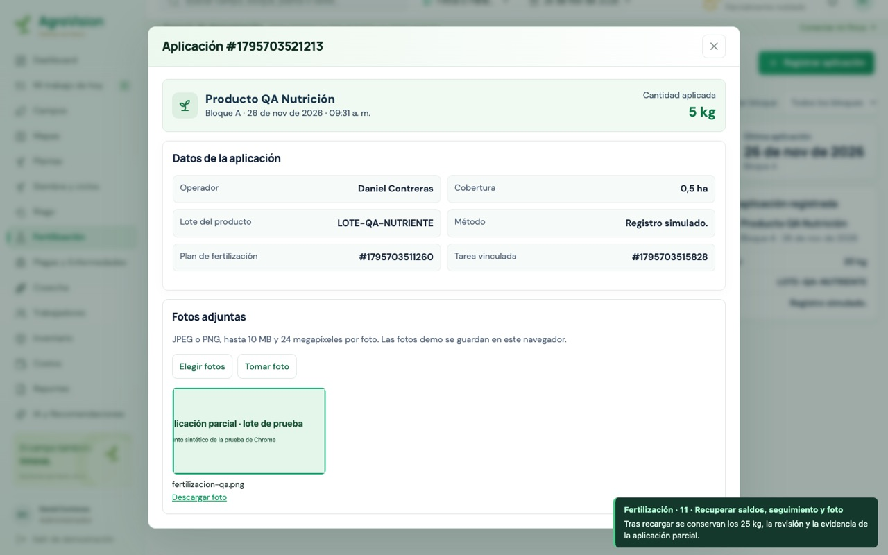
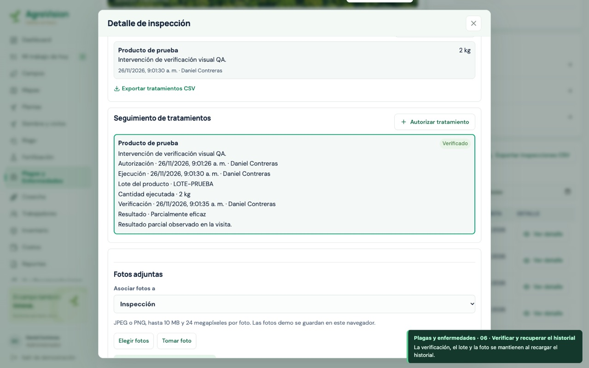

Los 15 recorridos archivados del 25 de noviembre de 2026, 15:02–15:05 (COT) completaron 53 pasos con captura, con 0 casos fallidos y 0 omitidos. Cada recorrido usó una sesión independiente de demostración en Chrome de escritorio. Acceso usó autenticación simulada. Los adjuntos de las pruebas contienen datos sintéticos. Informe original de Playwright
Esta página conserva los pantallazos de cada paso y un video WebM por módulo en el repositorio. Las capturas están en JPEG y los videos en WebM. El registro de resultados detalla las ejecuciones posteriores y el listado de casos reúne todas las pruebas automatizadas de la regresión del 26 de noviembre.
| Módulo | Prueba automatizada | Resultado archivado | Evidencia |
|---|---|---|---|
| Acceso | Playwright | Aprobado · 3 pasos | Capturas · Video |
| Dashboard | Playwright | Aprobado · 3 pasos | Capturas · Video |
| Mi trabajo de hoy | Playwright | Aprobado · 4 pasos | Capturas · Video |
| Campos y bloques | Playwright | Aprobado · 3 pasos | Capturas · Video |
| Mapas | Playwright | Aprobado · 3 pasos | Capturas · Video |
| Surcos y plantas | Playwright | Aprobado · 3 pasos | Capturas · Video |
| Siembra y ciclos | Playwright | Aprobado · 4 pasos | Capturas · Video |
| Riego | Playwright | Aprobado · 5 pasos | Capturas · Video |
| Fertilización | Playwright | Aprobado · 5 pasos | Capturas · Video |
| Plagas y enfermedades | Playwright | Aprobado · 4 pasos | Capturas · Video |
| Medidas preventivas | Playwright | Aprobado · 3 pasos | Capturas · Video |
| Cosecha | Playwright | Aprobado · 3 pasos | Capturas · Video |
| Reportes | Playwright | Aprobado · 3 pasos | Capturas · Video |
| Centro agronómico | Playwright | Aprobado · 3 pasos | Capturas · Video |
| Configuración | Playwright | Aprobado · 4 pasos | Capturas · Video |
acceso
Acceso · 3 pasos aprobados. Ver prueba · Ver video WebM


dashboard
Dashboard · 3 pasos aprobados. Ver prueba · Ver video WebM


tareas
Mi trabajo de hoy · 4 pasos aprobados. Ver prueba · Ver video WebM


campos
Campos y bloques · 3 pasos aprobados. Ver prueba · Ver video WebM


mapas
Mapas · 3 pasos aprobados. Ver prueba · Ver video WebM


plantas
Surcos y plantas · 3 pasos aprobados. Ver prueba · Ver video WebM


siembra
Siembra y ciclos · 4 pasos aprobados. Ver prueba · Ver video WebM


riego
Riego · 5 pasos aprobados. Ver prueba · Ver video WebM



fertilizacion
Fertilización · 5 pasos aprobados. Ver prueba · Ver video WebM


Fertilización ampliada
El 26 de noviembre de 2026 pasó el recorrido ampliado de Fertilización en Chrome con datos de demostración. Se grabaron once pasos. Prueba automatizada · Informe de Playwright · Video WebM



Diagnóstico, catálogo e informe foliar
Capturas de las pruebas con PostGIS temporal del 26 de noviembre de 2026. Informe de las 16 ejecuciones · Cobertura de Fertilización
| Comprobación | Escritorio | Móvil |
|---|---|---|
| Interpretación con el perfil de la variedad | Pantallazo | Pantallazo |
| Revisión confirmada tras recargar | Pantallazo | Pantallazo |
| Rechazo de la unidad de dosis incompatible | Pantallazo | Pantallazo |
| Plan con composición del catálogo | Pantallazo | Pantallazo |
| Muestra foliar con el informe disponible tras recargar | Pantallazo | Pantallazo |


Ejecución de Fertilización por bloque
Grabaciones con una finca temporal en PostGIS. Registrar muestra y adjuntar una foto · Crear el plan, repartir tareas, adjuntar una foto de la aplicación y ver mapas · Informe de la suite · Revalidación del encuadre del mapa
| Paso | Escritorio | Móvil |
|---|---|---|
| Registrar la ubicación de la muestra | Pantallazo | Pantallazo |
| Consultar la ubicación y la foto guardadas | Pantallazo | Pantallazo |
| Repartir las tareas por ocurrencia | Pantallazo | Pantallazo |
| Consultar lo cubierto y lo pendiente del plan | Pantallazo | Pantallazo |
| Recuperar la foto de la aplicación desde el plan | Pantallazo | Pantallazo |
| Consultar el mapa de la finca por campo y bloque | Pantallazo | Pantallazo |


plagas
Plagas y enfermedades · 4 pasos aprobados. Ver prueba · Ver video WebM


Monitoreo y tratamientos
El 26 de noviembre de 2026 pasó el recorrido de sanidad con seis pasos en Chrome de escritorio. Los datos de la grabación son de demostración. Prueba automatizada · Informe del recorrido · Video WebM


| Prueba con PostGIS | Escritorio | Móvil |
|---|---|---|
| Monitoreo y alerta revisada | Pantallazo | Pantallazo |
| Tratamiento verificado | Pantallazo | Pantallazo |


Resultado de la revalidación en Chrome

Laboratorio e historial fitosanitario
Las capturas del 26 de noviembre de 2026 muestran los datos recuperados al recargar cada flujo de Chrome conectado a PostGIS temporal.
| Prueba con PostGIS | Escritorio | Móvil | Video de escritorio |
|---|---|---|---|
| Resultado de laboratorio vinculado a la inspección | Pantallazo | Pantallazo | Video WebM |
| Corrección histórica y auditoría con valores previos y posteriores | Pantallazo | Pantallazo | Video WebM |


Resultados y enlaces a pruebas
prevencion
Medidas preventivas · 3 pasos aprobados. Ver prueba · Ver video WebM


cosecha
Cosecha · 3 pasos aprobados. Ver prueba · Ver video WebM


reportes
Reportes · 3 pasos aprobados. Ver prueba · Ver video WebM


centro-agronomico
Centro agronómico · 3 pasos aprobados. Ver prueba · Ver video WebM


configuracion
Configuración · 4 pasos aprobados. Ver prueba · Ver video WebM


Cobertura adicional
| Pruebas | Alcance |
|---|---|
| Backend Gradle | Autenticación y roles, aislamiento entre fincas, geometrías, eventos agrícolas, alertas, tareas, fotos, inspecciones, prevención, riego y fertilización. Incluye pruebas H2 y PostGIS. |
| Unitarias del frontend | Incidencia y vigencia sanitaria, anulación e historial CSV, alcance por finca y cálculo de área y plantas, tareas vencidas, transiciones y bloqueos, exportación segura, calendario local e interpretación nutricional. |
| Playwright de escritorio y móvil | Recorridos funcionales de la aplicación con datos demo, API simulada y servidor de QA según el caso. |
| Recorrido conectado | Alta de cuenta, finca y estructura agrícola, riego, fertilización y cosecha con API y PostGIS temporales. |
| Administración conectada | Alta de producto y lote, entradas y salidas, gastos e ingresos, presupuesto, cuadrillas y asistencia. Consulta el resultado y el alcance de cada ejecución. |
Recorrido conectado de la finca
La prueba crea una finca, un campo, un bloque y un surco en PostGIS. Luego registra el riego, la aplicación de fertilizante y la cosecha del ciclo. Prueba automatizada · Pantallazo final del 26 de noviembre · Video del recorrido del 25 de noviembre

Administración de finca
El 26 de noviembre de 2026 se repitió el recorrido de Administración contra PostGIS temporal. Pasó en Chrome de escritorio y móvil. Prueba automatizada · Resultado y pruebas de API
| Dispositivo | Inventario | Costos | Trabajadores | Grabación completa |
|---|---|---|---|---|
| Escritorio | Salida y lote | Presupuesto recuperado | Cuadrilla y 8 horas | WebM |
| Móvil | Salida y lote | Presupuesto recuperado | Cuadrilla y 8 horas | WebM |


Vistas de demostración
Se verificó que los tres resúmenes y las pestañas siguientes abren con los datos de ejemplo.
| Módulo | Funciones verificadas en demostración | Pantallazos | Video |
|---|---|---|---|
| Trabajadores | Abrir el resumen y consultar Cuadrillas y asignaciones. | Resumen · Cuadrillas | WebM |
| Inventario | Abrir el resumen y consultar los lotes del almacén. | Resumen · Lotes | WebM |
| Costos | Abrir el resumen y consultar el control presupuestal. | Resumen · Presupuesto | WebM |


Las guías del catálogo de módulos detallan los casos de prueba y las brechas de cada flujo.
Cómo repetir las pruebas
Desde la raíz del repositorio, con las dependencias de frontend, Google Chrome y el componente de grabación de Playwright instalados:
python3 scripts/run_module_qa.py all --headless --pause-ms 1600 --action-ms 125 --workers 2El ejecutor genera resultados JSON, capturas, grabaciones y un informe HTML en frontend/playwright-report/qa-modulos-<id>/. Los scripts por módulo permiten grabar un recorrido individual. Para la API, PostGIS y la suite de escritorio y móvil, usa el ejecutor de QA conectado.